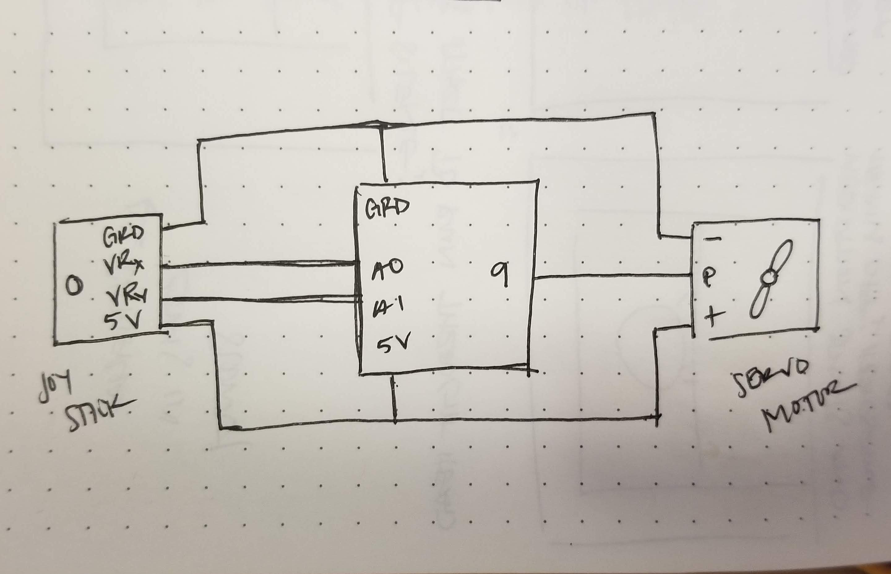
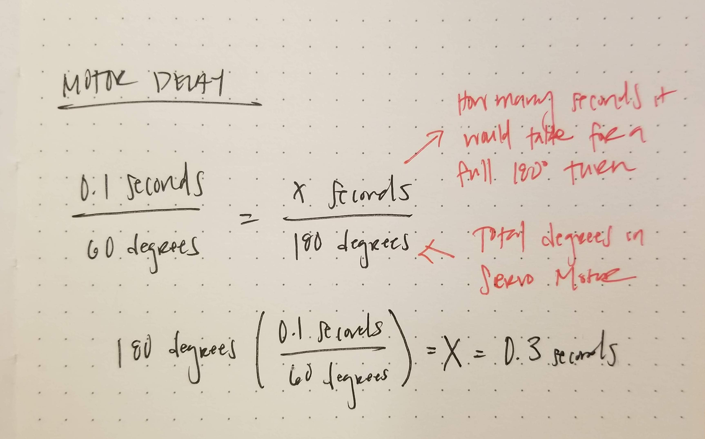

Assignment 5: Motors
Overview
Create a schematic, circuit, and code that uses a joystick to control a motor. Write the motor's position to the Serial port and show the output of the serial port monitor.
A snippet of the schematic:
 
According to the data sheet, it takes 0.1 seconds for the servo motor to turn 60 degrees, and can turn a total of 180 degrees. My calculations show that it would take 0.3 seconds to turn a full 180, meaning that the minimum delay() to complete a 180 turn is 300.
What the circuit looks like:

The servo motor is connected to pin 9 and ground. The joystick's x and y value is attached to A0 and A1, respectively. The arduino provides 5V of power to the breadboard that powers the joystick and motor.
Here's my code:
int x = A0; // output pin that the x value of joystick is attached to
int y = A1; // output pin that the y value of joystick is attached to
int xval = 0; // initialize x value
int yval = 0; // initialize y value
int angle = 0; // initialize angle for servo motor
#include <Servo. h> // pull code from servo library
Servo myServo; // use that code in my servo
void setup() {
Serial.begin(9600); // initialize serial communications at 9600 bps
myServo.attach(9); // servo motor is attached to pin 9
}
void loop() {
xval = analogRead(x); // read analog of x value
yval = analogRead(y); // read analog of y value
Serial.print("x = "); // write to serial monitor x value
Serial.println(xval);
Serial.print("y = "); // write to serial y value
Serial.println(yval);
Serial.println(); // line break
angle = map(xval, 0, 1023, 0, 180); // map the X value read in to an angle on the servo motor
myServo.write(angle); // change servo motor angle
delay(15); // wait for servo to respond
}
See it in action: